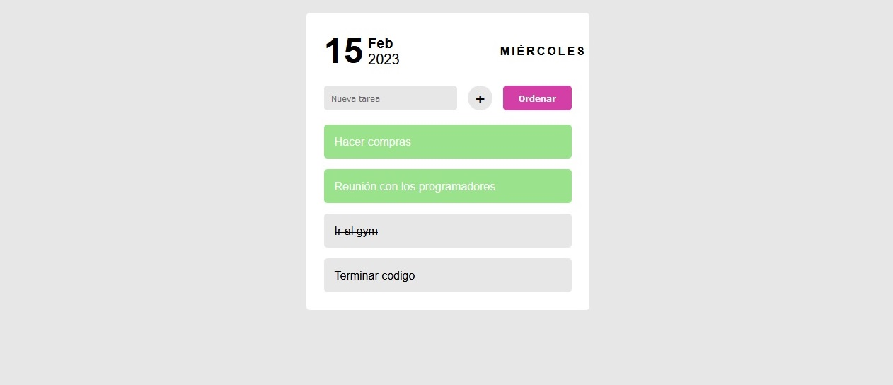

Task List
✅Aplicación web Task List de tareas. Diseño adaptable.
Descripción
Desarrollé una aplicación web de organización de tareas utilizando HTML, CSS, JavaScript y Bootstrap. La plataforma permite administrar actividades de forma rápida e intuitiva mediante una interfaz moderna, responsive y orientada a mejorar la experiencia del usuario.